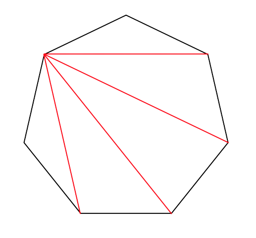

Visual Cluster Algebras
Matrix mutation
Rank 2
Greedy elements
d-vector fan
Frieze patterns
Triangulations and friezes
Contact Us
Interactive rank-two denominator-vector fan
Superimposed rank-two denominator-vector rays. Add computations with independent m, n, and index depth. Duplicate geometric rays within each computation are shown once.
d₁
d₂
0
Compute greedy element
Scroll over the plot to zoom and drag to pan. Click a ray to open its greedy-element action and centre the angular lens; the lens magnifies tiny angular separations and intentionally distorts angles above 1×.